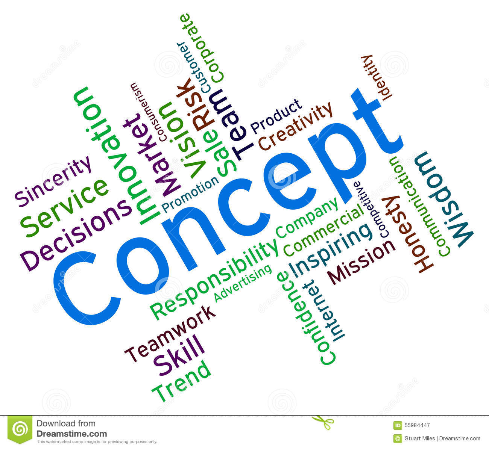
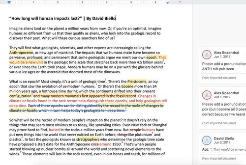
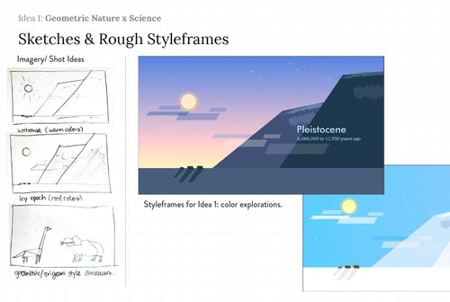
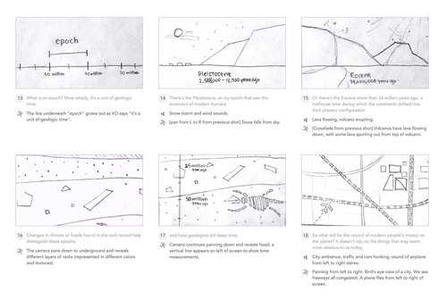
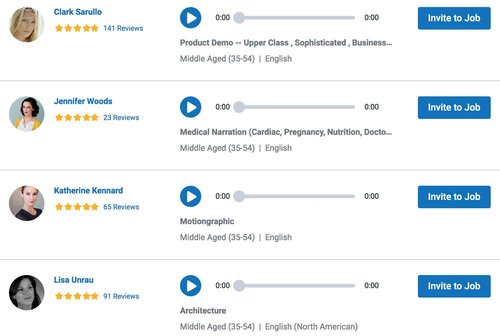
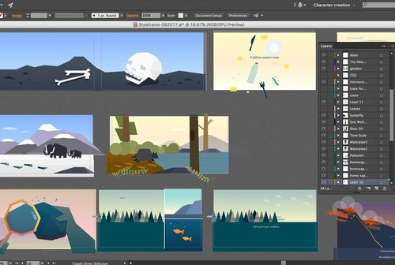
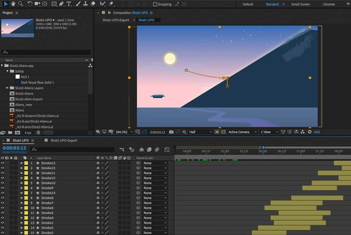
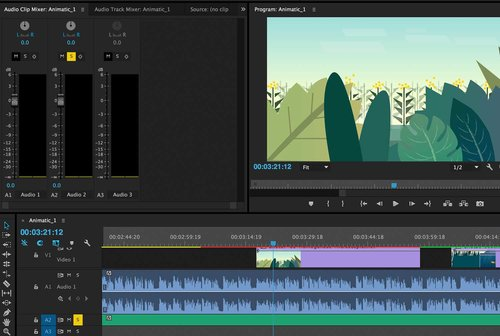
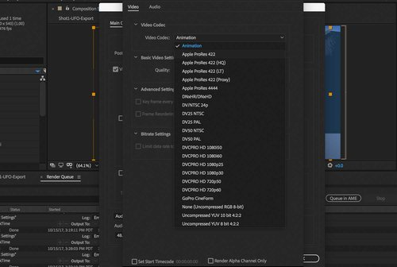

A moving and dynamic process
The process to create an animation can be long as we have to go through different steps. From the brainstorming between the client and us at the very beginning, to the final rendering and delivering to them; I'm going to bring you all along those steps and explain them to you.

1. CONCEPT
The first step of any project starts with the project brief. We will have a kick-off call where we get to know you and understand your purpose, target, goals, audience, tone and messaging. Understanding the background of your project helps us come up with the concept and determine the best format to tell your story in an unique and powerful way.

2. SCRIPT
Based on the brief, we will collaborate with you on the script - which translates the key messaging into a story. This is a key stage of the animation process where the story is developed. The voiceover will be produced based on the script.

3. STYLE FRAMES
This is where we explore different design treatments of the animation. It can start off as a mood board or compilation of visual references. We will explore what style is most appropriate for your story, yet still adhere to your brand guidelines. We will pick a few frames of the animation and design fully-rendered, colored frames to help you visualize the final look of the piece.

4. STORYBOARD
A storyboard is the perfect way to pre-visualize your story in the form of an image sequence. This is another crucial stage where we establish the visual story and how each scene looks. The storyboard will come with notes of the actions within a shot, camera movements, and voiceover/sound effects details.

5. VOICE-OVER
We will find the voice that matches your story, or if you already have a voiceover provided. Some stories can work without a voiceover if it’s a visual music or typography piece.

6. DESIGN & ILLUSTRATION
After the storyboard and style frames are approved, we will design the visual elements (e.g. background, infographic, characters, etc.) that are animation-ready.

7. ANIMATION
We are finally ready to animate! This process will take a couple of weeks depending on the length of video. Animation is not a quick process - that is why getting all the above steps approved is essential to save cost and prevent major revisions later.

8. MUSIC AND SOUND DESIGN
Animation and music go hand in hand. Great animation pieces are always complemented with the right music and sound effects to enhance the visuals and story flow. We will add those final sound touches to make your animation extra relatable.

9. FILE DELIVERY
Whether this piece is a commercial, product training video, or part of a social media campaign, we will export the according video file formats to make sure you are good to launch and share your piece. However, if you still want some improvements, we will take care of them until you are fully satisfied with our work.